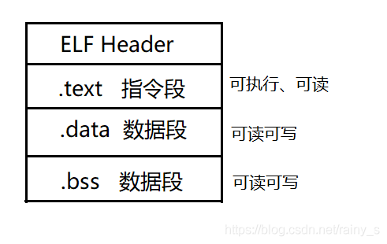
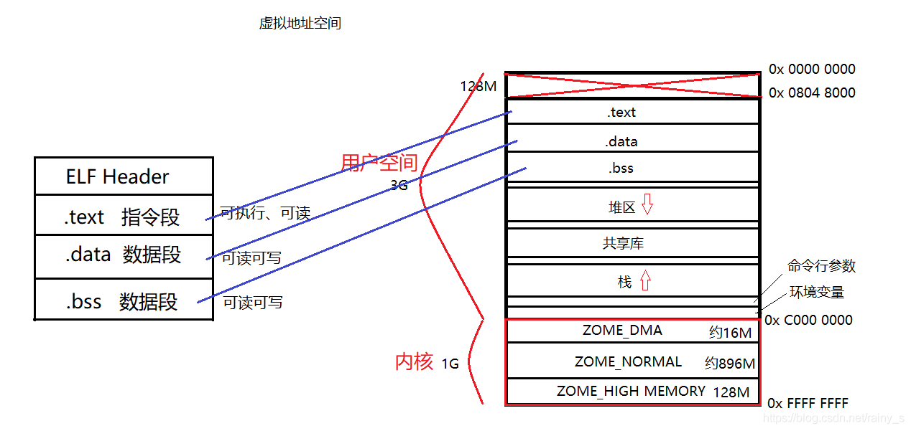

一、目标文件的格式
在Windows下可执行文件的格式通常为 .exe ，在Linux下则为ELF格式，而目标文件就是源代码经过了编译阶段但没有进行链接的中间文件，它的文件结构和内容与可执行文件很相似，因此一一般和可执行文件一起采用同一种格式存储。动态链接库和静态链接库都可以按照可执行文件的格式存储
二、目标文件中数据存储格式
汇编阶段完成后，指令被翻译成二进制形式。所有的代码被分别放进对应的段中。

.text 段存放指令，.data段存放数据，那么为什么要将指令和数据分开存储呢？.bss 段又有什么作用呢？
- 将指令和数据分开存储是因为由实模式进入到保护模式后，增加了一个虚拟地址空间以此来对数据进行保护，每一段进程对应的虚拟地址空间最终映射到真实的物理地址后，只能访问给定的物理地址，无法越界访问其它进程的物理地址。程序被装载后，数据和指令分别被映射到虚拟地址空间上对应的段中，而我们段的划分是按照权限划分的。.text段的数据是不被允许修改的，只能进行读操作和执行，而 .data 段的数据则可读可写，分开存储以免将指令修改。
- .bss 段中存储的是未初始化的全局变量、初始化为0的变量和局部静态变量（即弱符号），更准确的讲，.bss 段为他们预留了空间并没有真实存储，只是在最终链接成可执行文件的时候再在 .bss 段分配空间。

上图的右侧为虚拟地址空间的示意图。
虚拟地址空间在进行到真实的物理内存上的映射时，要进行以下三个步骤：
- 创建内核结构映射体，创建页目录和页表
- 加载指令和数据（以页为单位加载）
- 程序的入口地址下一行指令寄存器中


 94
94


 被折叠的 0 条评论
为什么被折叠?
被折叠的 0 条评论
为什么被折叠?
 到【灌水乐园】发言
到【灌水乐园】发言